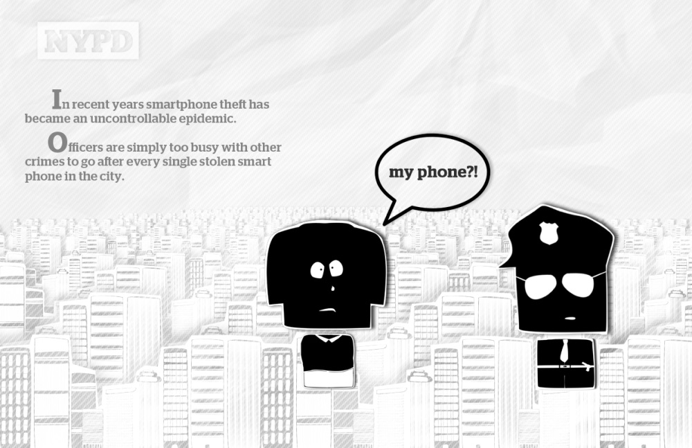
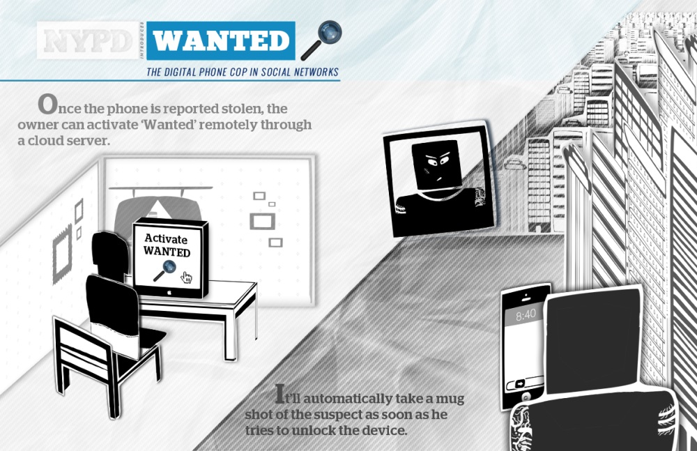
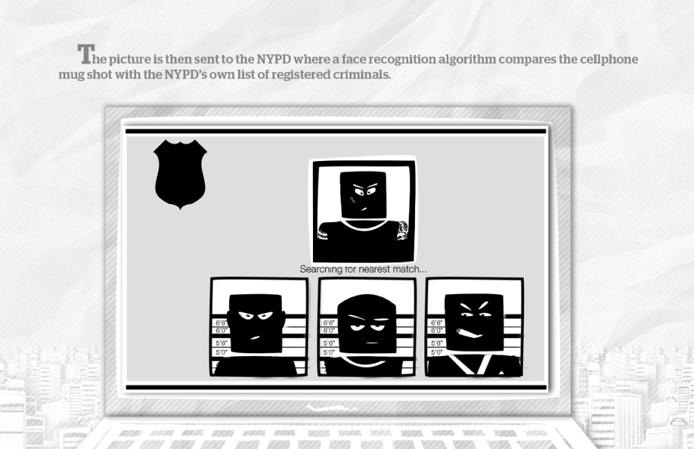
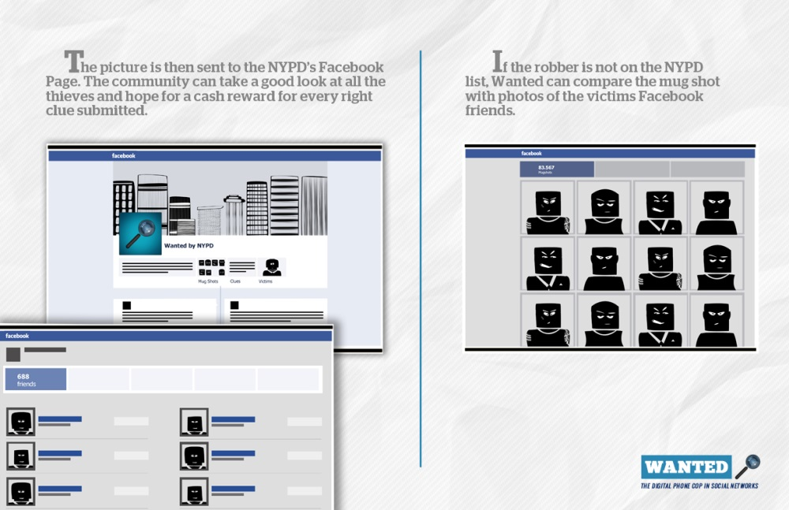

NYPD
WANTED, THE DIGITAL PHONE-COP IN SOCIAL NETWORKS
An app created by the NYPD that unites forces with civilians to fight against smartphone theft.
CREDITS: Alex Petrache: Concept, Script, Directing, Set Design and Construction | Valeria Gonzalez: Directing, Script, Photography, Concept, Set Design and Construction |Miruna Macri: Illustrations, Directing, Photography, Concept, Editing.
Instructors: Stefan Haverkamp, Miami Ad School Brooklyn, NY | Niklas Frings-Rupp, Miami Ad School Europe
RECOGNITIONS: HelloYouCreatives.com | Fubiz.com | TheNYEgotist.com | TheSFEgotist.com | Niice.co



